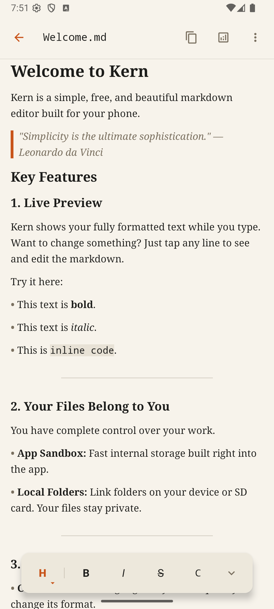

Instant Live Preview
Write standard Markdown syntax and watch it render instantly without modal preview switches. Headers, bolding, italics, lists, and code blocks format smoothly as you type.
Open Source Project
Kern combines real-time Markdown rendering with local file control in a calm, focused writing environment.
# Calm Markdown\n\nWriting with **Kern** instantly renders styled text.
Interactive Demo
Scroll down to watch the live Markdown editor type out syntax, compute readability metrics, switch themes, and navigate local files.
Write standard Markdown syntax and watch it render instantly without modal preview switches. Headers, bolding, italics, lists, and code blocks format smoothly as you type.
Evaluate sentence complexity and target grade levels on the fly. Kern highlights intricate sentences in warm tones without slowing down typing speed.
Seamlessly toggle between light cream canvas and dark charcoal modes engineered specifically for daytime writing and night reading sessions.
Access document folders directly through Android's Storage Access Framework. Clean breadcrumbs, folder trees, and local file independence with zero cloud lock-in.
# Live Preview\n\nWriting with **Kern** renders styled text...Writing with Kern renders styled text...
Project Principles
Preview rendered Markdown formatting in real-time as you write, with smooth inline syntax transitions and zero typing lag.
Read and write Markdown files directly using Android's Storage Access Framework (SAF). No accounts or cloud databases required.
Read comfortably with warm canvas themes, 1.6x line spacing, high-contrast text, and JetBrains Mono rendering.
Use a dual-pane workspace on tablets and foldables, pairing a 35% folder explorer alongside a 65% document canvas.
All source code, build scripts, and issue tracking are public on GitHub under open licenses.
App Tour
Click any screen tab below to explore features or inspect full-resolution screenshots.
Markdown syntax tokens reveal themselves inline when focused and render smoothly when editing completes.

Privacy
Kern does not upload your files to remote servers or require user accounts. Your writing stays entirely local.
Read the privacy statement →Community & Support
Email gary@attach.design or open an issue on GitHub.